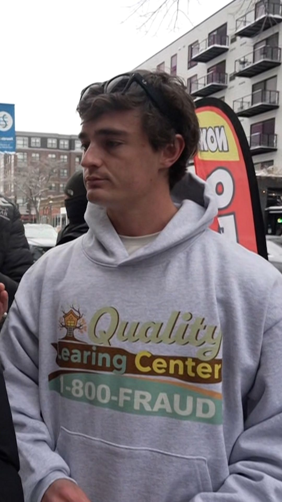

On a cold morning in Minneapolis, an independent video creator approached a childcare centre that, according to official records, was operating successfully and receiving public funding. When he knocked on the door, there was no response.
What followed would evolve into a national controversy - one shaped as much by viral imagery as by the complexities of public policy and investigation.
The building, marked by a slightly crooked sign reading “Quality Learning Center” - notably misspelled as “Learing” - quickly became a focal point of public scrutiny. Behind the camera was independent journalist Nick Shirley, whose footage would soon circulate widely online and draw attention from political figures, commentators, and media outlets across the United States.
A Video That Sparked National Attention
In late 2025, Shirley released a video alleging that significant amounts of public funding were being directed toward childcare centres that appeared, at least during his visits, to be inactive or unoccupied. The footage showed him visiting multiple locations, documenting locked doors, quiet interiors, and a lack of visible activity.
The video spread rapidly across social media platforms, where it was shared, debated, and amplified by a wide range of users. Within days, it had been cited by political commentators and referenced in broader discussions about government oversight and public spending.
For many viewers, the visual evidence was compelling. Images of seemingly empty facilities - combined with the symbolic detail of a misspelled sign - were interpreted by some as indicative of deeper systemic failures.
Allegations of “Ghost” Childcare Centres
At the centre of the controversy was a highly consequential claim: that certain childcare providers may have been receiving public funds without delivering active services. The concept of “ghost” daycares - facilities existing on paper but not functioning in practice - gained rapid traction in public discourse.
This narrative resonated in part because Minnesota had previously faced scrutiny over fraud in other publicly funded programs, particularly during the COVID-19 pandemic. As a result, the allegations were quickly situated within a broader context of concerns about accountability and oversight.
Investigations and Emerging Nuance
As journalists, regulators, and officials began examining the claims more closely, the situation proved more complex than initial impressions suggested. While authorities acknowledged that fraud has occurred within certain public programs, they emphasized that the specific allegations presented in the viral video required careful verification.
Some childcare providers featured in the footage strongly disputed the implications of wrongdoing, arguing that the video presented a limited and potentially misleading snapshot of their operations. They pointed to several possible explanations:
- Visits may have occurred outside standard operating hours
- Temporary closures, staffing shortages, or administrative issues may have affected visibility
- Short-term observations do not necessarily reflect ongoing service provision
Officials initiated inquiries into the broader issue of oversight; however, no publicly confirmed findings have conclusively established that the specific centres shown in the video were fraudulent at the time of reporting.
Political and Public Response
The controversy soon reached the highest levels of state government, placing increased scrutiny on Minnesota Governor Tim Walz and his administration. Critics argued that the situation - whether fully substantiated or not - highlighted potential weaknesses in regulatory systems and oversight mechanisms.
Supporters of the administration, however, urged caution in interpreting viral content as definitive evidence. They noted that:
- State agencies had already undertaken efforts to investigate and address fraud in public programs
- Viral media can amplify incomplete or context-limited narratives
- The broader issue requires careful, evidence-based evaluation rather than rapid conclusions
Despite these responses, the political impact was significant. The issue became part of a wider national conversation about government spending, accountability and the role of digital media in shaping public perception.
Media, Perception and Public Trust
The case highlights a growing challenge in the digital era: the speed at which visual content can influence public opinion, often outpacing formal investigation. While such footage can play an important role in drawing attention to potential issues, it can also simplify complex situations into easily digestible - but not always complete - narratives.
For Nick Shirley, the video reinforced his reputation as a disruptive figure in independent media - praised by supporters for raising difficult questions, while criticised by others for drawing broad conclusions from limited evidence.
For policymakers and the public alike, the episode underscores the difficulty of distinguishing between verified fraud, administrative inefficiency, and misinterpretation - particularly when debates unfold in highly visible and politically charged environments.
An Ongoing Conversation
As investigations continue and public discussion evolves, the controversy surrounding Minnesota’s childcare funding system remains unresolved in important respects. It reflects deeper structural questions about oversight, transparency, and the responsibilities of both institutions and media actors.
Ultimately, the case extends beyond any single video or location. It speaks to a broader issue facing modern societies: how to balance scrutiny with accuracy in an age where information spreads rapidly and narratives form before all facts are established.
In that context, one question continues to resonate:
To what extent does what we see online reflect the full reality behind it?